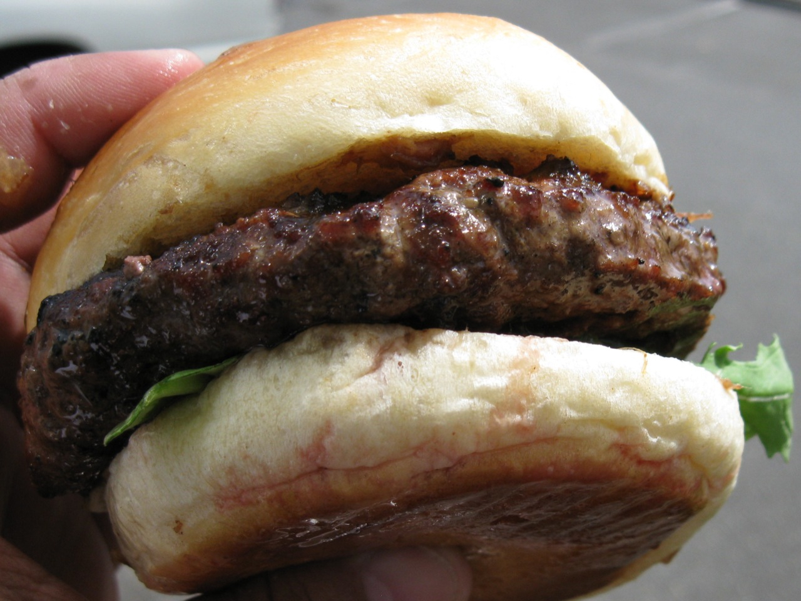

Simple Burger

I love me some burgers. I also love not really cooking if I don't feel like it, here's how to combine the two
You will need:
- Ground beef
- Half an onion, sliced
- American cheese
- A lot of sauce
- Breadcrumbs
- Herbs and spices
Directions:
- In a large bowl, mix together the meat, breadcrumbs, herbs and spices and some ketchup.
- Pound that all together with an egg as well, why not. Anyway once that's done shape them into patties.
- Grill those patties in a George Foreman registered trademark grill. Otherwise fry them on a non-George Foreman regular frying pan.
- Toast your buns, put butter on them. Burgers are already unhealthy why skimp on additional flavour
- put the patties in the buns then you're done. Slather a bunch of sauce on it because it will probably not detract from any of the taste